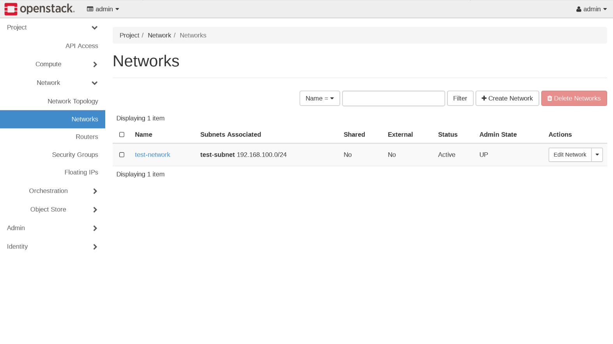

Creating a Virtual Network with OpenStack Contrail
You can create virtual networks in Contrail Networking
from the OpenStack. The following procedure shows how to create a
virtual network when using OpenStack.
To create a virtual network when using OpenStack Contrail,
select Project > Network > Networks. The Networks page is displayed. See Figure 1.Figure 1: Networks Page

Click Create Network. The Create Network window is displayed. See Figure 2 and Figure 3.Figure 2: Create Networks
Figure 3: Subnet and Gateway Details
Click the Network and Subnet tabs
to complete the fields in the Create Network window. See
field descriptions in Table 1.
Table 1: Create Network Fields
Field
Description
Network Name
Enter a name for the network.
Subnet Name
Enter a name for the subnetwork.
Network Address
Enter the network address in CIDR format.
IP Version*
Select IPv4 or IPv6.
Gateway IP
Optionally, enter an explicit gateway IP address for
the IP address block. Check the Disable Gateway box if no gateway
is to be used.
Click the Subnet Details tab to specify the
Allocation Pool, DNS Name Servers, and Host Routes.Figure 4: Additional Subnet Attributes
To save your network, click Create , or click Cancel to discard your work and start over.